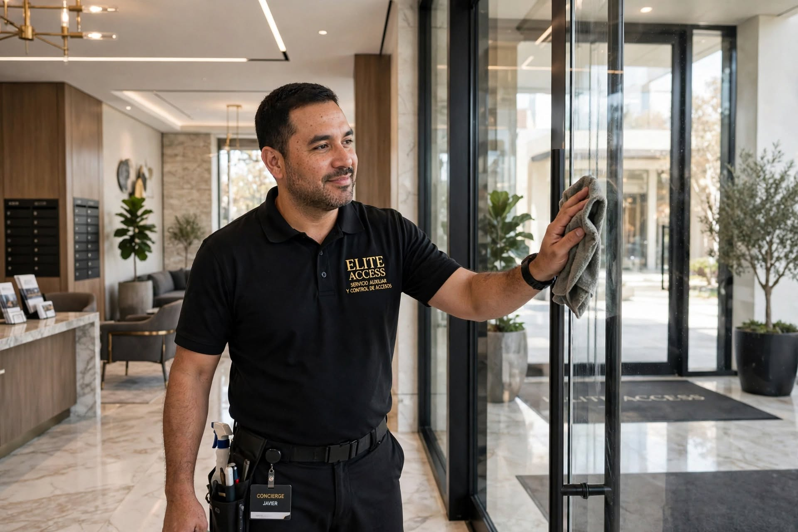
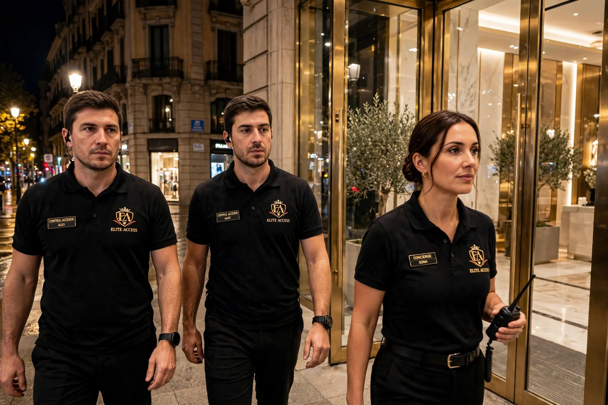
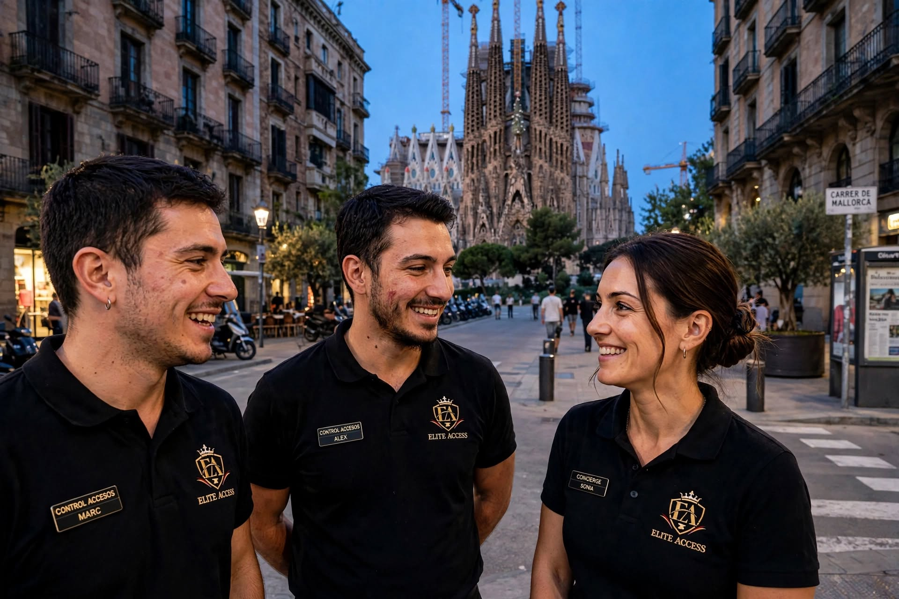

01 · APOYO OPERATIVO
Servicios auxiliares
Información, orientación, apoyo logístico y comunicación de incidencias, con funciones definidas por escrito.
Apoyo profesional para empresas y particulares: comercios, restaurantes, discotecas, eventos, comunidades y necesidades puntuales. Definimos el servicio, el horario y las funciones antes de empezar.
Soluciones modulares para cubrir necesidades concretas. Cada propuesta se define según el lugar, el horario, las tareas permitidas y el nivel de coordinación que necesita el cliente.
Información, orientación, apoyo logístico y comunicación de incidencias, con funciones definidas por escrito.

Organización de entradas y salidas según el establecimiento y la habilitación que exija la normativa.

Atención inicial, orientación de visitantes y comunicación de incidencias.

Comprobaciones rutinarias y apoyo operativo conforme al protocolo del cliente.

Apoyo a usuarios y zonas comunes, con aviso de incidencias a la persona responsable.

Apoyo logístico, información al público y refuerzos temporales.

Apoyo en organización de accesos y atención al público. Las funciones de control de acceso habilitado o seguridad se asignan conforme a la normativa aplicable.

Orientación al público, apoyo de sala y refuerzo operativo en horas de mayor afluencia.

Apoyo de sala, orientación de clientes y organización operativa en horas punta.

Atención inicial, orientación al cliente y apoyo en la organización del espacio comercial.

Información y orientación de usuarios y apoyo operativo, dentro de las funciones permitidas.

Servicios auxiliares puntuales según necesidad, ubicación y alcance acordado previamente.

Tareas de limpieza y conservación de alcance acordado; trabajos técnicos por personal cualificado cuando corresponda.

Coordinación con profesionales jurídicos para valorar las vías legales disponibles en cada caso.
Trabajamos las propuestas en función de las necesidades comunicadas por cada cliente, la ubicación y las tareas concretas del puesto.

La calidad empieza antes del primer turno: alcance definido, instrucciones comprensibles y un canal de comunicación acordado.
Ubicación, horario, volumen de actividad y tareas solicitadas.
Funciones, cobertura, coordinación y condiciones por escrito.
Instrucciones, contacto responsable y procedimientos de incidencia.
Comunicación de incidencias y ajustes acordados con el cliente.
El control de acceso habilitado en determinados establecimientos de actividades recreativas no es lo mismo que la vigilancia de seguridad privada ni que las tareas auxiliares en cualquier edificio o comercio. Cada puesto debe definirse según la normativa aplicable.
ELITE ACCESS BCN no presenta los servicios auxiliares como vigilancia de seguridad. Si un encargo requiere una actividad reservada o una habilitación específica, debe prestarse mediante la estructura profesional legalmente habilitada.
Conocer el alcance de los servicios →No publicamos cifras de clientes, años de experiencia, certificaciones ni contratos que no se hayan acreditado. Las imágenes de esta web son material de presentación y no constituyen prueba de intervenciones o contratos concretos.
Una selección de nuestras siete imágenes corporativas y de presentación.


Las imágenes son ilustrativas de presentación y no deben interpretarse como acreditación de trabajos, clientes o contratos realizados.
Atendemos solicitudes para Barcelona y su área metropolitana, Girona, Lleida y Tarragona. La disponibilidad y el alcance de cada servicio se confirman en la propuesta, según ubicación, horario y recursos necesarios.
Consultar disponibilidadPara preparar una propuesta útil, indícanos el tipo de servicio, la ubicación, los días y horarios, las tareas y la fecha prevista de inicio.
Teléfono
+34 644 151 646
La contratación queda sujeta a la definición del servicio, disponibilidad y requisitos legales aplicables.